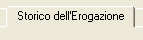
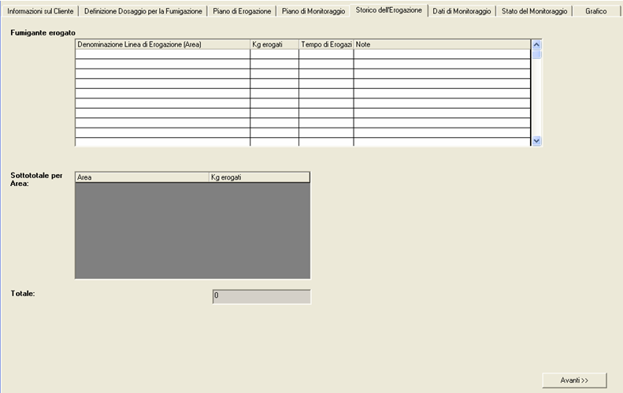
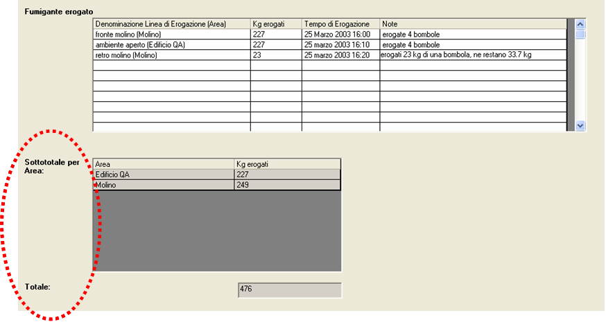
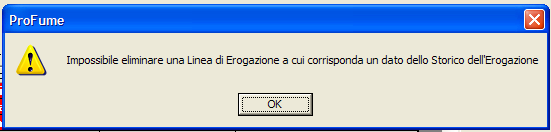
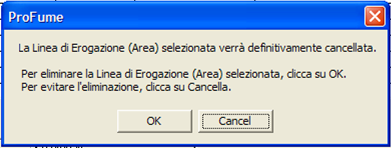

Tab
Storico dell’Introduzione
Una volta elaborato il Piano di Monitoraggio, il tab successivo del programma è dedicato allo Storico dell’Erogazione.

Il tab Storico dell’Erogazione rappresenta lo spazio deputato a registrare le quantità di fumigante rilasciate nelle varie zone della struttura. Nota: nessun campo di questo tab è obbligatorio. Ecco un esempio del tab Storico dell’Erogazione prima dell’inserimento delle informazioni:

Nell’esempio seguente il fumigatore ha riportato la data,
l’ora e la quantità di ProFume erogata per area, unitamente alle corrispondenti
annotazioni. Notare i Sottototali per Area e il Totale Complessivo relativo
all’intero edificio (cerchiati con la linea tratteggiata). Questi valori sono calcolati sotto la colonna Fumigante Erogato:

Messaggi
di avvertimento associati al Tab Storico dell’Introduzione
Se si prova ad eliminare una linea di erogazione inserita nel tab Piano di Erogazione alla quale siano associati dei dati, appare il messaggio di avvertimento seguente:

Prima che si proceda all'eliminazione di una linea di erogazione del gas appare il seguente messaggio di avvertimento:
